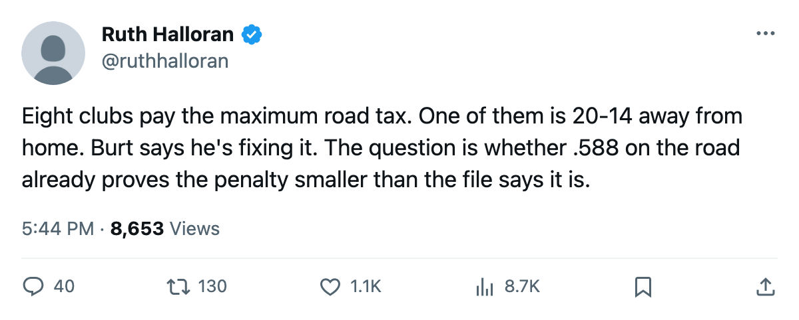

The Road Tax: Tampa Bay pays the maximum travel penalty and wins 20 of 34 on the road
Eight clubs sit at travel level zero. Six of them lose more than half their games away from home. Tampa Bay is the other two.
 Ruth HalloranBusiness of hockey · The Building
Ruth HalloranBusiness of hockey · The Building
 Tampa Bay Lightning has the league's worst travel budget in the only sense the model measures it: level zero, modifier minus-6, the deepest penalty the tuning table offers. The club's own building file puts travel at 0. It is the same figure carried by
Tampa Bay Lightning has the league's worst travel budget in the only sense the model measures it: level zero, modifier minus-6, the deepest penalty the tuning table offers. The club's own building file puts travel at 0. It is the same figure carried by  Detroit Red Wings,
Detroit Red Wings,  Montreal Canadiens,
Montreal Canadiens,  Atlanta Thrashers,
Atlanta Thrashers,  Phoenix Coyotes,
Phoenix Coyotes,  Vancouver Canucks,
Vancouver Canucks,  Minnesota Wild and
Minnesota Wild and  Los Angeles Kings. Seven of those eight clubs lose the majority of their road games. Tampa Bay does not.
Los Angeles Kings. Seven of those eight clubs lose the majority of their road games. Tampa Bay does not.
The Lightning are 20 wins and 14 losses on the road, a .588 winning percentage that ranks 6th among the 30 clubs. They sit behind  Toronto Maple Leafs (.735),
Toronto Maple Leafs (.735),  Colorado Avalanche (.706),
Colorado Avalanche (.706),  New Jersey Devils (.667),
New Jersey Devils (.667),  Washington Capitals (.657) and
Washington Capitals (.657) and  Boston Bruins (.618). Of those five, only Boston Bruins carries a travel track the same level below par. Toronto, New Jersey, Washington and Colorado each sit at level 3 or above, paying a penalty of -1 or less.
Boston Bruins (.618). Of those five, only Boston Bruins carries a travel track the same level below par. Toronto, New Jersey, Washington and Colorado each sit at level 3 or above, paying a penalty of -1 or less.
| club | travel level | road wins | road GP | road wp |
|---|---|---|---|---|
| Tampa Bay Lightning | 0 | 20 | 34 | .588 |
| Vancouver Canucks | 0 | 18 | 36 | .500 |
| Atlanta Thrashers | 0 | 16 | 34 | .471 |
| Phoenix Coyotes | 0 | 16 | 35 | .457 |
| Los Angeles Kings | 0 | 14 | 34 | .412 |
| Minnesota Wild | 0 | 14 | 34 | .412 |
| Detroit Red Wings | 0 | 12 | 32 | .375 |
| Montreal Canadiens | 0 | 10 | 35 | .286 |
Tampa Bay is the only club at level zero whose road record would look respectable from a higher travel level. The five clubs at level 3 (modifier -1) average roughly .550 on the road. Tampa Bay beats that average while paying five full points of modifier more.
Michael Burt told The Tunnel's Marcus Bell after the game that travel is the next line he raises. "You look at our road record, 20 wins 14 losses, that's respectable but we've been on bad sleep, bad meals, the whole thing," he said. "Travel is invisible until you're exhausted in the third period in Vancouver or Edmonton. I know what zero costs us."
He knows what it costs the ledger, too. Tampa Bay books $79.30M in revenue against a $47.75M payroll, leaving $33.11M in profit. The per-point cost is $0.52M, tied with  Nashville Predators for the lowest in the league. The building is full: 16,180 a night at $79 a ticket, seventh-highest attendance in a 30-club league. Burt has the money and the gate to fund a raise. The record does not show that he needs one.
Nashville Predators for the lowest in the league. The building is full: 16,180 a night at $79 a ticket, seventh-highest attendance in a 30-club league. Burt has the money and the gate to fund a raise. The record does not show that he needs one.
A single level takes travel from 0 to 1, halving the modifier from -6 to -4. That is still 4 levels from par. The three clubs at level 1 with the best road records ( Dallas Stars at .500,
Dallas Stars at .500,  St. Louis Blues at .444,
St. Louis Blues at .444,  Carolina Hurricanes at .400) do not dramatically outperform the level-zero group. The jump that appears in the data is from level 2 to level 3: the -2-to--1 transition coincides with road records that climb toward .550 and above, as at Toronto (.735), New Jersey (.667) and Washington (.657).
Carolina Hurricanes at .400) do not dramatically outperform the level-zero group. The jump that appears in the data is from level 2 to level 3: the -2-to--1 transition coincides with road records that climb toward .550 and above, as at Toronto (.735), New Jersey (.667) and Washington (.657).
Burt already made one move this winter. Tampa Bay raised its practice rink from level 2 to level 3 between February 21 and February 23, shifting the home-ice modifier from -2 to -1. In the five home games since that change, the Lightning went 4 wins and 1 loss, scoring 3.40 a night against 2.80 allowed. In the 30 home games before, the numbers were 3.47 and 2.93, with a 19-11 record. The sample is too thin to call a pattern. The direction is the one he wanted.
What the travel upgrade would do, if he makes it, is shave 2 points off the road modifier. On a 34-game away schedule, the tuning table's own mechanism tells you the effect is spread across every attribute of every player on every road night. Two points of modifier across the full roster, averaged across 34 games, is a real number the model tracks. It is also a number nobody outside the club can see isolated from line changes, injuries, and the opponent's own building.
Tampa Bay is 35-20-6, sits second in the Southeast, and has the league's second-highest average morale at 98.4. The team is winning games in buildings where the travel line taxes them the same as Detroit taxes Montreal. If the upgrade moves the road modifier from -6 to -4 and the team is already over .500 on the road, what it buys is the margin in April when legs are gone. "I know what zero costs us," he said. The record shows the men paying it are still cashing checks.
